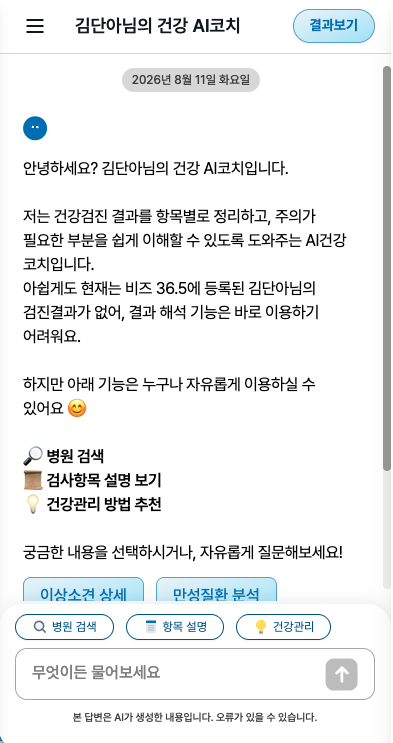
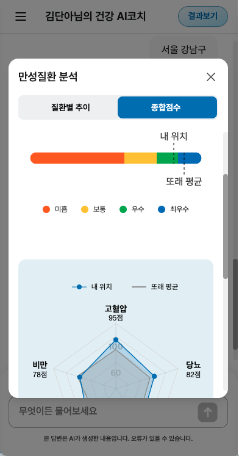
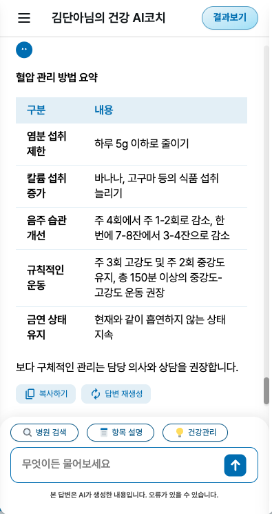
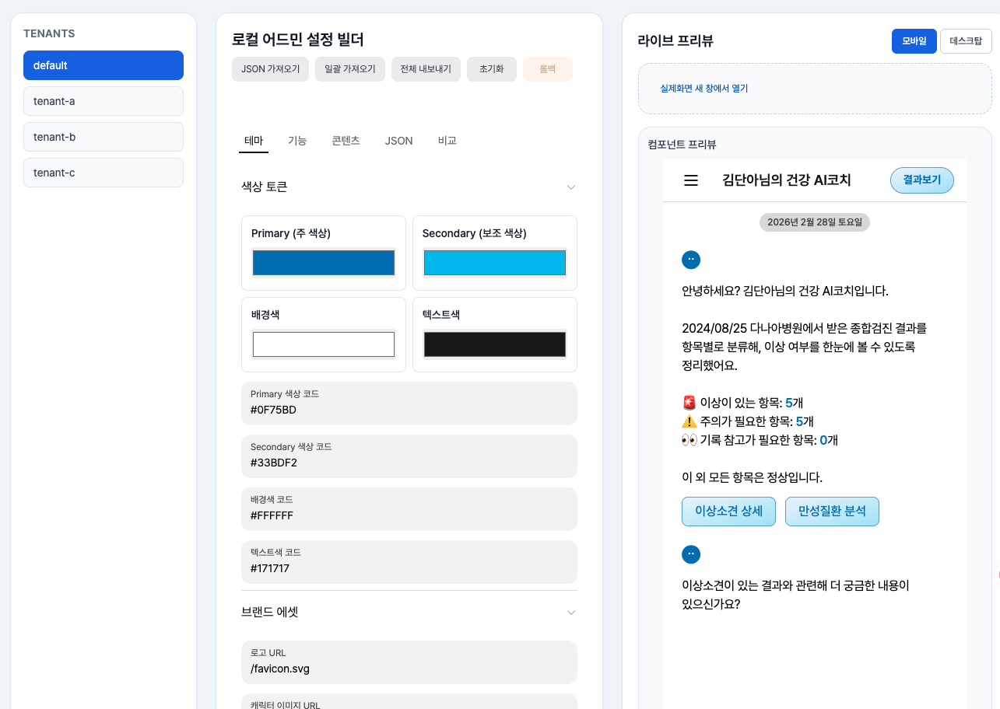
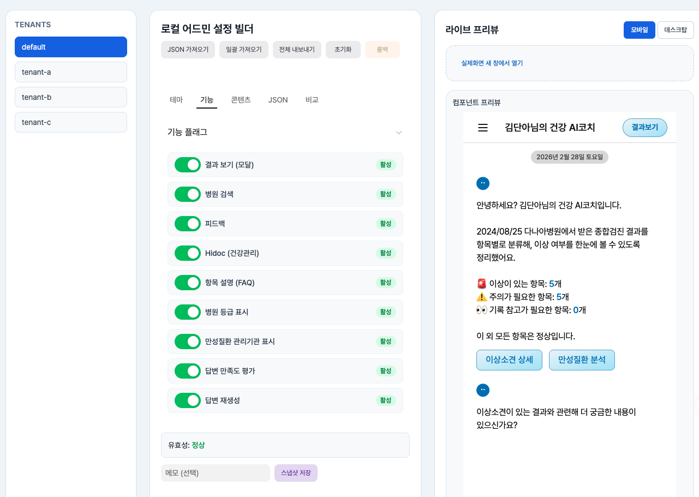

건강검진 결과를 사용자가 이해하고 질문할 수 있게 만드는 AI 건강 상담 서비스입니다. 시작점은 목업 수준의 챗봇으로, LLM 답변 지연·Markdown 렌더링·오류 대응·고객사별 확장 구조가 모두 부족한 상태였습니다. 이를 검진 결과·건강 점수·만성질환 분석 등 12개 도메인과 AI 채팅(스트리밍 응답·재시도·재생성·상담 이력·피드백)을 갖춘 실서비스로 고도화했습니다.



실서비스 모바일 화면 — 웰컴 진입 메뉴, 만성질환 종합점수(게이지·레이더 차트), Markdown 응답을 표 컴포넌트로 렌더링한 AI 답변(복사하기·답변 재생성 버튼 포함)


직접 구축한 로컬 어드민 설정 빌더 — 테넌트별 테마 색상 토큰·기능 플래그를 조정하면 우측 라이브 프리뷰에 즉시 반영
[주요 개발]
AI 채팅 경험 구현 — SSE 실시간 스트리밍, Markdown → 표·차트·링크 컴포넌트 렌더링 계층, XSS·LLM 오류 가드레일과 오류 4유형 분류·복구 전략
검증 하네스 구축 — 배포 전 자동 검증을 필수 관문으로 만들어 팀 10명 전원이 같은 기준으로 출시하는 체계 정착: Vitest 약 2,600케이스·Playwright E2E를 배포 게이트로 편입, 판정 기준을 FE AX 표준(SOP)으로 정리
SaaS 확장 구조 — Base-Theme·Config-Driven UI(feature flag)로 고객사별 테마·기능을 운영·기획자가 직접 제어
[성과]
2차 PoC 검증을 거쳐 실서비스 활성화를 계획 대비 2주 조기 달성 — 전환 후 임직원 활성 사용자 3,493명, 400건 발화 검증 기준 답변 화면 정상 출력률 100%
AI 답변 출력 10초 → 4초 · 초기 진입 30초 → 6초 · AI 챗봇 화면 기준 Lighthouse 91점, 신규 고객사 FE 커스터마이징 2주 납품(최초 구현 10주 대비)